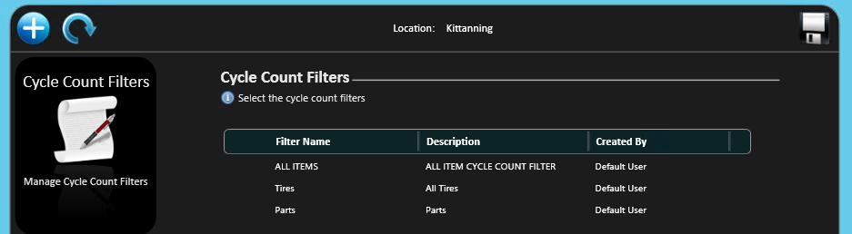
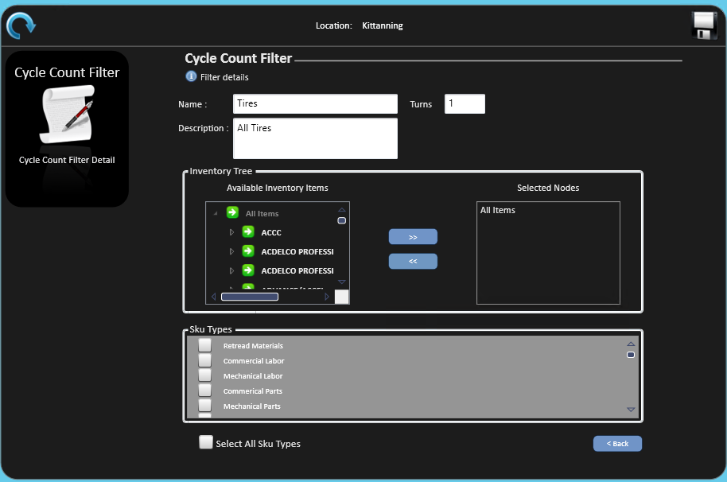
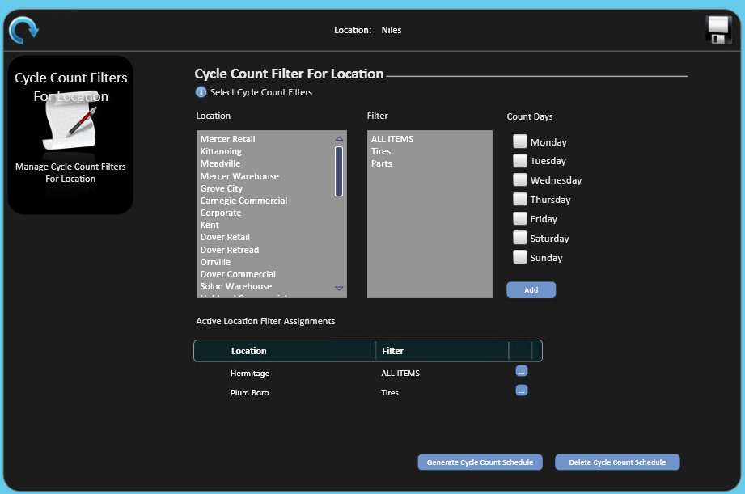
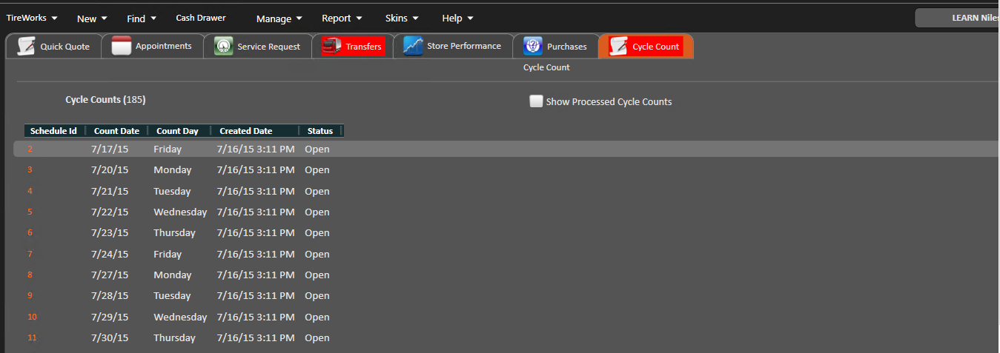
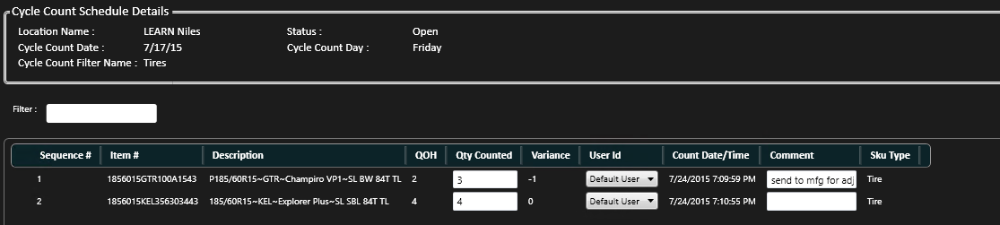
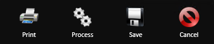
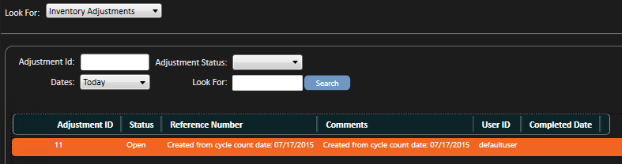
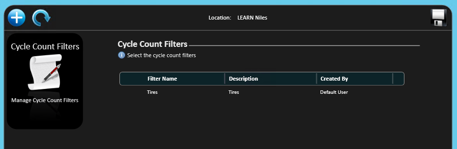
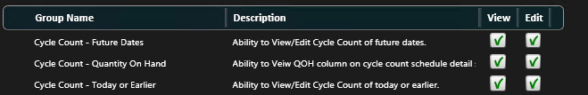

Cycle Count Setup and Maintenance
Use cycle counts to set up stores for counting based on SKU types, turns and more. Cycle counts populate automatically for each store on the days of the week you set.
Cycle count setup is under Manage; Inventory; Advanced Physical Inventory Count, in Cycle Count Filter and Cycle Count Filters for Location.
Set up a cycle count filter
- Go to Manage; Inventory; Advanced Physical Inventory Count; Cycle Count Filter.

- Select .

- Enter the Count Filter Name.
- Enter the number of Turns, generally 1. This is how many times to count within the date range you select.
- Enter a Description to explain the filter name if needed.
- Select the inventory you expect to count from the inventory tree.
- Select All Items if you plan to select by SKU types.
- Or select the branches you want at any level of the inventory tree.
- Select to add them to the Selected Nodes list.
- Check the SKU types you want, or check Select All Sku Types.
- If you select all SKU types, the results include items that aren't inventoried, such as labor, fees and other charges.
- Select Save .
Assign cycle count filters to stores
- Go to Manage; Inventory; Advanced Physical Inventory Count; Cycle Count Filters for Location.

- Select the store or stores.
- Select the filter or filters.
- Check the Count Days you want.
- Select Add .
- The assignment displays under Active Location Filter Assignments.
- Select the stores to generate a schedule for.
- Select .
- Select the date range of the cycle count period.
- Press Enter or double-click the selected date to accept the dates.
- A dialog box asks you to verify the stores and date range. Select Yes or No.
- A second dialog box confirms that the cycle count was generated. Select OK.
Stores set up for cycle counting now have a CYCLE COUNT tab on the home screen. See Complete a cycle count below for the steps users follow.
Complete a cycle count
The CYCLE COUNT tab shows all cycle counts for the date range and number of turns selected. You can print a count, or open it with the icon to the left of the line.
- Count the product physically, following your company's business practice.

- Open the schedule ID you counted, using the icon to the left of the ID number.
- Enter the quantities counted in the Qty. Counted column.

-
- The Variance column shows the counted quantity less current QOH.
- Change the User ID if there were multiple counters.
- Enter comments if you want.
- Select Save or Process, depending on your business process.

-
- Save keeps the count for processing later.
- Process generates an inventory adjustment automatically.
- If you chose Process, confirm when you are asked to process the cycle count.
- A dialog box displays when it processes successfully.
- To find the adjustment, go to Find; Inventory Adjustment. Its comments show that it was created from a cycle count, and the date.

Note: Clear if you don't want processed cycle counts to display on the CYCLE COUNT tab.
Maintain store assignments
Make these changes on Cycle Count Filters for Location.
To remove a store:
- Hover over the store.
- Select the minus sign to the left of the store name.
To delete a cycle count schedule:
- Select the stores.
- Select .
- Select the changed dates and follow the setup steps above.
To change the days of the week:
- Select the ellipsis to the right of the store.
- Change the days.
- Select OK.
Maintain cycle count filters
Make these changes on Cycle Count Filter.

To edit or open a filter:
- Select the green arrow to the left of the filter name.
- Make your changes.
- Select Save.
To delete a filter:
- Select the minus sign to the left of the filter name.
- Select Yes or No in the dialog box.
- Select Save.
Related access rights
